Unified Limits¶
As of the Queens release, keystone has the ability to store and relay information known as a limit. Limits can be used by services to enforce quota on resources across OpenStack. This section describes the basic concepts of limits, how the information can be consumed by services, and how operators can manage resource quota across OpenStack using limits.
What is a limit?¶
A limit is a threshold for resource management and helps control resource utilization. A process for managing limits allows for reallocation of resources to different users or projects as needs change. Some information needed to establish a limit may include:
project_id
domain_id
API service type (e.g. compute, network, object-storage)
a resource type (e.g. ram_mb, vcpus, security-groups)
a default limit
a project specific limit i.e resource limit
user_id (optional)
a region (optional depending on the service)
Note
The default limit of registered limit and the resource limit of project limit now are limited from -1 to 2147483647 (integer). -1 means no limit and 2147483647 is the max value for user to define limits. The length of unified limit’s resource type now is limited from 1 to 255 (string).
Since keystone is the source of truth for nearly everything in the above list, limits are a natural fit as a keystone resource. Two different limit resources exist in this design. The first is a registered limit and the second is a project limit.
Registered limits¶
A registered limit accomplishes two important things in order to enforce quota across multi-tenant, distributed systems. First, it establishes resource types and associates them to services. Second, it sets a default resource limit for all projects. The first part maps specific resource types to the services that provide them. For example, a registered limit can map vcpus, to the compute service. The second part sets a default of 20 vcpus per project. This provides all the information needed for basic quota enforcement for any resource provided by a service.
Domain limits¶
A domain limit is a limit associated to a specific domain and it acts as an override for a registered limit. Similar to registered limits, domain limits require a resource type and a service. Additionally, a registered limit must exist before you can create a domain-specific override. For example, let’s assume a registered limit exists for vcpus provided by the compute service. It wouldn’t be possible to create a domain limit for cores on the compute service. Domain limits can only override limits that have already been registered. In a general sense, registered limits are likely established when a new service or cloud is deployed. Domain limits are used continuously to manage the flow of resource allocation.
Domain limits may affect the limits of projects within the domain. This is particularly important to keep in mind when choosing an enforcement model, documented below.
Project limits¶
Project limits have the same properties as domain limits, but are specific to projects instead of domains. You must register a limit before creating a project-specific override. Just like with domain limits, the flow of resources between related projects may vary depending on the configured enforcement model. The support enforcement models below describe how limit validation and enforcement behave between related projects and domains.
Together, registered limits, domain limits, and project limits give deployments the ability to restrict resources across the deployment by default, while being flexible enough to freely marshal resources across projects.
Limits and usage¶
When we talk about a quota system, we’re really talking about two systems. A system for setting and maintaining limits, the theoretical maximum usage, and a system for enforcing that usage does not exceed limits. While they are coupled, they are distinct.
Up to this point, we’ve established that keystone is the system for maintaining limit information. Keystone’s responsibility is to ensure that any changes to limits are consistent with related limits currently stored in keystone.
Individual services maintain and enforce usage. Services check enforcement against the current limits at the time a user requests a resource. Usage reflects the actual resource allocation in units to a consumer.
Given the above, the following is a possible and legal flow:
User Jane is in project Foo
Project Foo has a default CPU limit of 20
User Jane allocated 18 CPUs in project Foo
Administrator Kelly sets project Foo CPU limit to 10
User Jane can no longer allocate instance resources in project Foo, until she (or others in the project) have deleted at least 9 CPUs to get under the new limit
The following would be another permutation:
User Jane is in project Foo
Project Foo has a default CPU limit of 20
User Jane allocated 20 CPUs in project Foo
User Jane attempts to create another instance, which results in a failed resource request since the request would violate usage based on the current limit of CPUs
User Jane requests more resources
Administrator Kelly adjust the project limit for Foo to be 30 CPUs
User Jane resends her request for an instance, which succeeds since the usage for project Foo is under the project limit of 30 CPUs
This behavior lets administrators set the policy of what the future should be when convenient, and prevent those projects from creating any more resources that would exceed the limits in question. Members of a project can fix this for themselves by bringing down the project usage to where there is now headroom. If they don’t, at some point the administrators can more aggressively delete things themselves.
Enforcement models¶
Project resources in keystone can be organized in hierarchical structures, where projects can be nested. As a result, resource limits and usage should respect that hierarchy if present. It’s possible to think of different cases where limits or usage assume different characteristics, regardless of the project structure. For example, if a project’s usage for a particular resource hasn’t been met, should the projects underneath that project assume those limits? Should they not assume those limits? These opinionated models are referred to as enforcement models. This section is dedicated to describing different enforcement models that are implemented.
It is important to note that enforcement must be consistent across the entire deployment. Grouping certain characteristics into a model makes referring to behaviors consistent across services. Operators should be aware that switching between enforcement models may result in backwards incompatible changes. We recommend extremely careful planning and understanding of various enforcement models if you’re planning on switching from one model to another in a deployment.
Keystone exposes a GET /limits/model endpoint that returns the enforcement
model selected by the deployment. This allows limit information to be
discoverable and preserves interoperability between OpenStack deployments with
different enforcement models.
Flat¶
Flat enforcement ignores all aspects of a project hierarchy. Each project is considered a peer to all other projects. The limits associated to the parents, siblings, or children have no affect on a particular project. This model exercises the most isolation between projects because there are no assumptions between limits, regardless of the hierarchy. Validation of limits via the API will allow operations that might not be considered accepted in other models.
For example, assume project Charlie is a child of project Beta, which is a child of project Alpha. All projects assume a default limit of 10 cores via a registered limit. The labels in the diagrams below use shorthand notation for limit and usage as l and u, respectively:
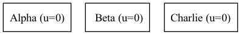
Each project may use up to 10 cores because of the registered limit and none of
the projects have an override. Using flat enforcement, you’re allowed to
UPDATE LIMIT on Alpha to 20:
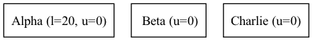
You’re also allowed to UPDATE LIMIT on Charlie to 30, even though Charlie
is a sub-project of both Beta and Alpha.
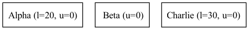
This is allowed with flat enforcement because the hierarchy is not taken into consideration during limit validation. Child projects may have a higher limit than a parent project.
Conversely, you can simulate hierarchical enforcement by adjusting limits through the project tree manually. For example, let’s still assume 10 is the default limit imposed by an existing registered limit:
You may set a project-specific override to UPDATE LIMIT on Alpha to 30:
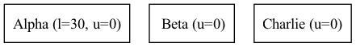
Next you can UPDATE LIMIT on Beta to 20:
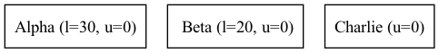
Theoretically, the entire project tree consisting of Alpha, Beta, and
Charlie is limited to 60 cores. If you’d like to ensure only 30 cores are
used within the entire hierarchy, you can UPDATE LIMIT on Alpha to 0:
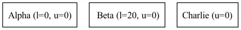
You should use this model if you:
Have project hierarchies greater than two levels
Want extremely strict control of project usage and don’t want resource usage to bleed across projects or domains
Advantages¶
Allows you to model specific and strict limits
Works with any project hierarchy or depth
Usage is only calculated for the project in question
Disadvantages¶
Resources aren’t allowed to flow gracefully between projects in a hierarchy
Requires intervention and verification to move resources across projects
Project limit validation isn’t performed with respect to other projects or domains
Strict Two Level¶
The strict_two_level enforcement model assumes the project hierarchy does
not exceed two levels. The top layer can consist of projects or domains. For
example, project Alpha can have a sub-project called Beta within this
model. Project Beta cannot have a sub-project. The hierarchy is restrained to
two layers. Alpha can also be a domain that contains project Beta, but
Beta cannot have a sub-project. Regardless of the top layer consisting of
projects or domains, the hierarchical depth is limited to two layers.
Resource utilization is allowed to flow between projects in the hierarchy,
depending on the limits. This property allows for more flexibility than the
flat enforcement model. The model is strict in that operators can set
limits on parent projects or domains and the limits of the children may never
exceed the parent.
For example, assume domain Alpha contains two projects, Beta and Charlie. Projects Beta and Charlie are siblings so the hierarchy maintains a depth of two. A system administrator sets the limit of a resource on Alpha to 20. Both projects Beta and Charlie can consume resources until the total usage of Alpha, Beta, and Charlie reach 20. At that point, no more resources should be allocated to the tree. System administrators can also reserve portions of domain Alpha’s resource in sub-projects directly. Using the previous example, project Beta could have a limit of 12 resources, implicitly leaving 8 resources for Charlie to consume.
The following diagrams illustrate the behaviors described above, using projects named Alpha, Beta, Charlie, and Delta. Assume the resource in question is cores and the default registered limit for cores is 10. Also assume we have the following project hierarchy where Alpha has a limit of 20 cores and its usage is currently 4:
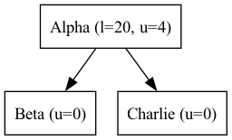
Technically, both Beta and Charlie can use up to 8 cores each:
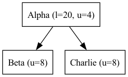
If Alpha attempts to claim two cores the usage check will fail
because the service will fetch the hierarchy from keystone using oslo.limit
and check the usage of each project in the hierarchy to see that the total
usage of Alpha, Beta, and Charlie is equal to the limit of the tree, set
by Alpha.limit:
Despite the usage of the tree being equal to the limit, we can still add children to the tree:
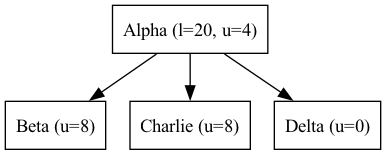
Even though the project can be created, the current usage of cores across the tree prevents Delta from claiming any cores:
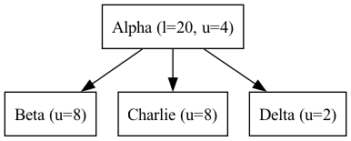
Creating a grandchild of project Alpha is forbidden because it violates the two-level hierarchical constraint:
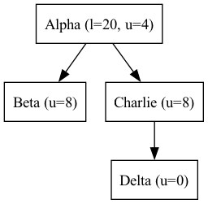
This is a fundamental constraint of this design because it provides a very clear escalation path. When a request fails because the tree limit has been exceeded, a user has all the information they need to provide meaningful context in a support ticket (e.g., their project ID and the parent project ID). An administrator should be able to reshuffle usage accordingly. Providing this information in tree structures with more than a depth of two is much harder, but may be implemented with a separate model.
Granting Beta the ability to claim more cores can be done by giving Beta a project-specific override for cores
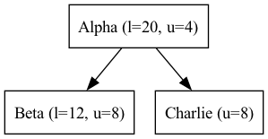
Note that regardless of this update, any subsequent requests to claim more cores in the tree will be rejected since the usage is equal to the limit of the Alpha. Beta can claim cores if they are released from Alpha or Charlie:
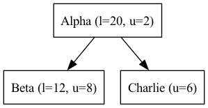
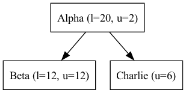
While Charlie is still under its default allocation of 10 cores, it won’t be able to claim any more cores because the total usage of the tree is equal to the limit of Alpha, thus preventing Charlie from reclaiming the cores it had:
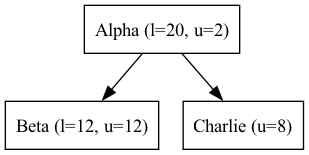
Creating or updating a project with a limit that exceeds the limit of Alpha is forbidden. Even though it is possible for the sum of all limits under Alpha to exceed the limit of Alpha, the total usage is capped at Alpha.limit. Allowing children to have explicit overrides greater than the limit of the parent would result in strange user experience and be misleading since the total usage of the tree would be capped at the limit of the parent:
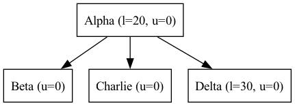
Finally, let’s still assume the default registered limit for cores is 10, but we’re going to create project Alpha with a limit of 6 cores.
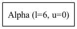
When we create project Beta, which is a child of project Alpha, the limit API ensures that project Beta doesn’t assume the default of 10, despite the registered limit of 10 cores. Instead, the child assumes the parent’s limit since no single child limit should exceed the limit of the parent:
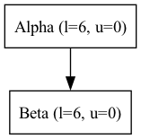
This behavior is consistent regardless of the number of children added under project Alpha.
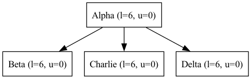
Creating limit overrides while creating projects seems counter-productive given the whole purpose of a registered default, but it also seems unlikely to throttle a parent project by specifying it’s default to be less than a registered default. This behavior maintains consistency with the requirement that the sum of all child limits may exceed the parent limit, but the limit of any one child may not.
You should use this model if you:
Want resources to flow between projects and domains within a hierarchy
Don’t have a project depth greater than two levels
Are not concerned about usage calculation performance or don’t have project trees that are wide
Advantages¶
Allows resources to flow between projects and domains within a strict two-level hierarchy
Limits are validated when they are created and updated
Disadvantages¶
Project depth cannot exceed two levels
Performance may suffer in wide and flat project hierarchies during usage calculation